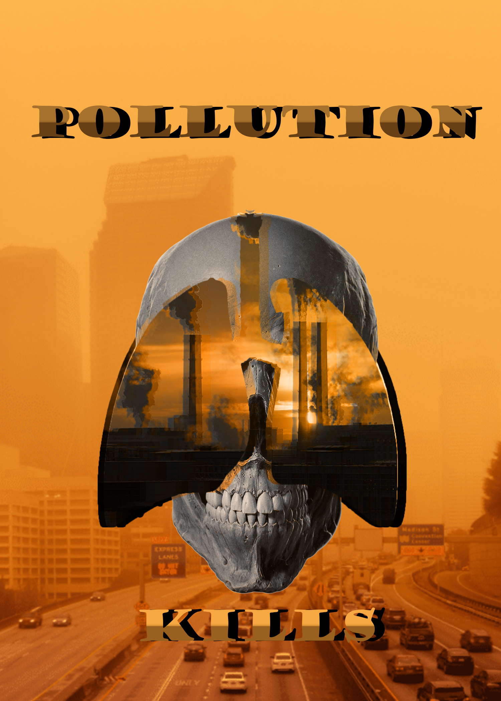
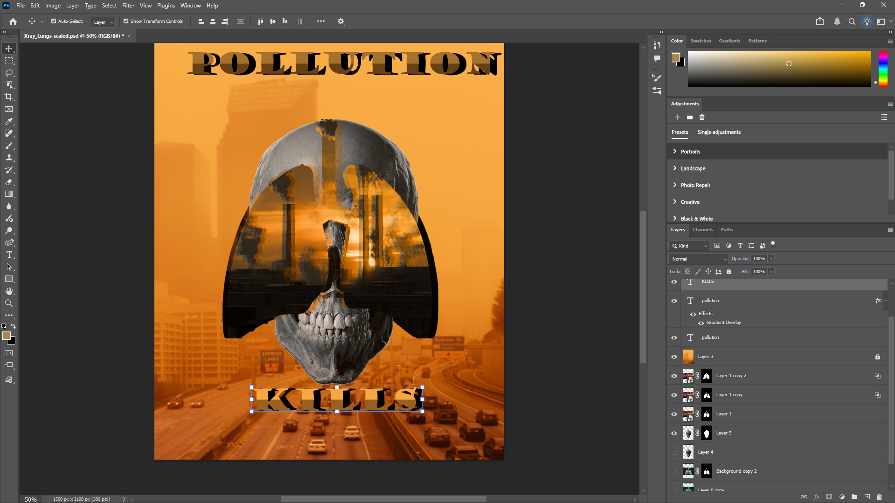

When creating this photomontage I explore many varieties of techniques and concepts such as creating layer masks, using blending modes, and non destructive editing. When creating this I knew I wanted to do something health related so I searched up images of human bodies and stumbled onto lungs. I got an image of lungs from the web, created a copy, then I used the object selector tool in order to select my object so I can create a mask. Once I did that I found an image of a factory and dragged it into the mask of the lungs. I used the mask of the lungs to hide the extra parts of the factory rather than erasing to practice non destructive editing techniques.
The background left empty so I decided to look for a polluted city online, I placed it as very top layer then used the “hue” blending mode in order to match the color between the images. Once that was done, I noticed that the factory lung mask looked bland so I created two extra copies. In the first copy I double clicked the layer then removed the G(green) and B(blue) channels and on the second one I removed the R(red) and G(green) channels. I moved the first copy to the left and the second on to the right to create almost an “glitch” effect. Finally, I added text, “Pollution” and created a copy, double clicked it then clicked "gradient overlay” in order to add color to my text. I used the original black text and moved it to the right to create a shadow for the colored text.